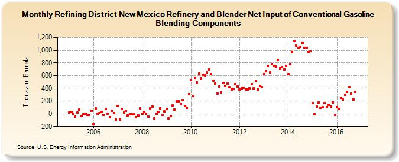

|
Download Data (XLS File) |
|
||||||||
|  | ||||||||
| Refining District New Mexico Refinery and Blender Net Input of Conventional Gasoline Blending Components (Thousand Barrels) | ||||||||
| Year | Jan | Feb | Mar | Apr | May | Jun | Jul | Aug | Sep | Oct | Nov | Dec |
|---|---|---|---|---|---|---|---|---|---|---|---|---|
| 2005 | 18 | 29 | 3 | -43 | 18 | 64 | -34 | -8 | 4 | -17 | -13 | 47 |
| 2006 | -163 | 81 | 4 | 10 | 31 | -16 | 73 | 3 | -50 | 43 | 14 | -90 |
| 2007 | 125 | -92 | 74 | 24 | 43 | -25 | -11 | -9 | -6 | -59 | -23 | 82 |
| 2008 | -2 | 30 | -1 | -43 | 82 | 114 | -77 | -3 | 25 | 85 | -20 | 34 |
| 2009 | 72 | -77 | -38 | 129 | 63 | 191 | 192 | 157 | 211 | 124 | 93 | 310 |
| 2010 | 525 | 280 | 569 | 489 | 626 | 559 | 611 | 601 | 649 | 694 | 618 | 517 |
| 2011 | 474 | 318 | 427 | 338 | 483 | 440 | 474 | 414 | 385 | 388 | 468 | 425 |
| 2012 | 384 | 398 | 408 | 385 | 382 | 403 | 463 | 395 | 512 | 382 | 436 | 417 |
| 2013 | 622 | 669 | 751 | 645 | 774 | 749 | 745 | 839 | 718 | 730 | 699 | 754 |
| 2014 | 623 | 774 | 975 | 1,141 | 1,077 | 1,038 | 1,044 | 1,113 | 1,038 | 1,036 | 971 | 983 |
| 2015 | 172 | -9 | 110 | 174 | 89 | 100 | 168 | 104 | 138 | 114 | 179 | -15 |
| 2016 | 102 | 75 | 248 | 219 | 295 | 347 | 414 | 312 | 227 | 343 | 58 | |
| - = No Data Reported; -- = Not Applicable; NA = Not Available; W = Withheld to avoid disclosure of individual company data. |
| Release Date: 1/31/2017 |
| Next Release Date: 2/28/2017 |